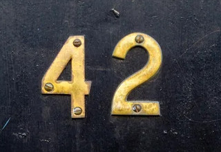

Para efeitos da nota atribuida à resolução de exercícios ao longo do semestre - Submeter até 23:59 de 27 de Março
(o problema continuará depois disponível para submissão, mas sem contar para a nota)
[para perceber o contexto do problema deve ler o guião da aula #01]
 O Pedro sempre soube que o número 42 é a resposta para o sentido da vida, do universo e de tudo mais. Com o seu radiotelescópio ele está a apanhar sinais de rádio de baixa frequência que ele tenta perceber se poderá ser sinais de vida extraterrestre.
Os sinais podem ser interpretados como uma sequência de números inteiros e, naturalmente, ao Pedro só lhe passou pela cabeça saber se o número 42 aparece com a frequência necessária para considerar que os sinais são de facto sinal de vida inteligente. Será que podes ajudá-lo a contar quantas vezes o número 42 aparece?
Dada uma sequência de N números inteiros, a tua tarefa é calcular a frequência do número 42, ou seja, quantas vezes ocorre o número 42 na sequência que te é dada.
Na primeira linha do input vem um inteiro N indicando o tamanho da sequência, ou seja, a quantidade de números a considerar.
Seguem-se N linhas, cada uma com um inteiro Si indicando os números da sequência.
O output é constituído por uma linha contendo um inteiro representando a quantidade de números Si da sequência que são exactamente 42.
São garantidos os seguintes limites em todos os casos de teste que irão ser colocados ao programa:
| 1 ≤ N ≤ 1 000 | Tamanho da sequência | |
| 1 ≤ Si ≤ 1 000 000 | Inteiros da sequência |
7 12 42 42 35 10 567 42
3
O número 42 aparece 3 vezes na sequência [12,42,42,35,10,567,42].
Desenho e Análise de Algoritmos (CC2001)
DCC/FCUP - Faculdade de Ciências da Universidade do Porto